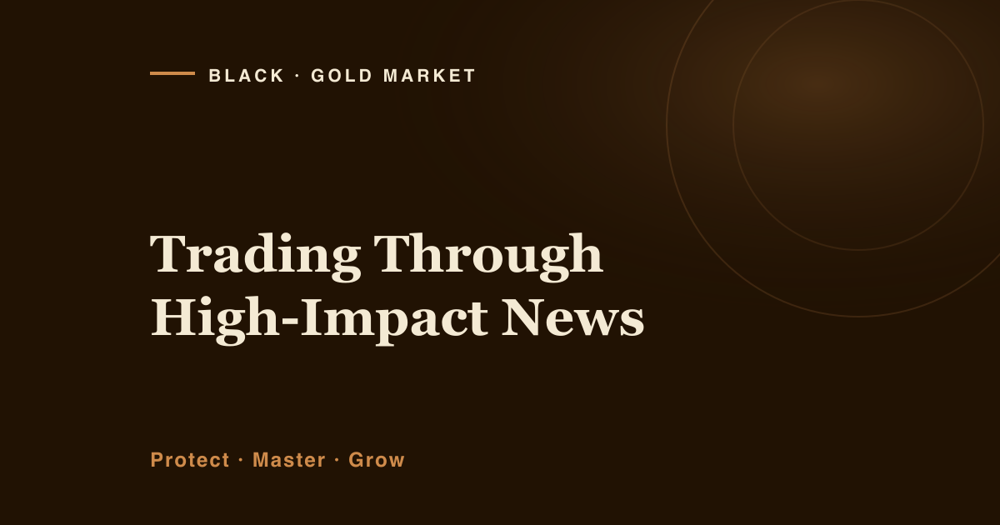

There is a particular kind of loss that has almost nothing to do with being wrong. You had the right read. You placed the stop where it belonged. And a scheduled number came out, price detonated in both directions inside thirty seconds, and you were taken out at a price that was never even on your screen. The market did not prove you wrong. The release simply broke the machinery you were trading through.
That is the thing to understand about high-impact news, and it is why "just pick the right direction" misses the point entirely. Around a big release, a Federal Reserve decision, an inflation print, a jobs report, the danger is not that gold is unpredictable. Gold is always unpredictable. The danger is that for a few brutal minutes the normal rules of execution stop applying: the spread balloons, liquidity thins out, your stop can be leapt clean over, and the first move is very often a lie the second move corrects. You can be completely right about where gold ends the day and still lose money getting there.
What "high-impact" actually means for gold
Gold does not react to news the way a stock reacts to its own earnings. It reacts, mostly, to what the news does to the US dollar and interest-rate expectations. When a report suggests rates will stay higher for longer, the dollar tends to firm and gold usually feels the pressure; when it hints at cuts, the reverse often follows. The releases that move gold hardest are therefore the ones that move the rate story: central-bank decisions, the meeting minutes, inflation data, and the monthly employment figures. Unscheduled events, a geopolitical shock, a sudden risk-off panic, do it too, which is a large part of why gold rises in times of fear.
The scheduled ones are on a calendar you can look at for free. That single habit, knowing what is due before you sit down to trade, prevents more disasters than any entry technique. You cannot be ambushed by an event you already circled.
Why the news window breaks execution
Look again at the diagram, because the mechanics matter more than the mood. Three specific things happen in the release window, and each one costs money independently of direction.
The spread widens. In calm conditions the gap between buy and sell price is small. In the seconds around a release, brokers widen it, sometimes dramatically, because they cannot price risk fast enough. You pay that gap on entry and again on exit. A trade that looked fine on a normal spread can be underwater the instant it opens on a news spread.
Stops get jumped. A stop is not a guarantee of price; it is an instruction to exit at the next available price. When gold gaps through your level in one violent tick, "next available" can be far worse than where you placed the stop. This is slippage, and it is exactly where planned losses quietly become unplanned ones.
Price whipsaws. The first spike is notoriously unreliable. Gold routinely lurches one way, triggers a wave of stops, then reverses and trends the other way once the dust settles. Traders who jump on the first move are often stopped out just before the real move begins. The market did not fool you, the news window did.
The two honest choices
Given all that, there are really only two defensible ways to handle a high-impact release, and neither of them is "trade the spike and hope."
Choice one: stand aside. Be flat before the number. Let the chaos happen without you, watch how it resolves, and look for a cleaner, better-priced setup once the spread has normalised and a genuine trend has appeared. This is what most professional-minded traders actually do, and it is not cowardice, at Black Gold Market the order is always protect, master, grow, and sitting out an event you cannot control is protection in its purest form. Being flat is a position. Often it is the best one on the board.
Choice two: trade it small, with pre-defined risk, and accept the slippage. If you have a genuine plan for the event, not a hunch, a plan, then the only responsible way to express it is with drastically reduced size, a stop wide enough to survive the noise, and full acceptance that slippage may make your loss larger than intended. You reduce size because you cannot rely on the stop behaving. The smaller position is what keeps a jumped stop survivable rather than fatal. The full arithmetic of that trade-off is in how to size a trade so one loss cannot hurt you.
What is not on the menu is the third option everyone secretly wants: full size, tight stop, into the release, expecting the market to respect your level. It will not. That is not trading the news; it is donating to it.
Sizing and stops when you cannot trust either
The uncomfortable truth of event trading is that your two main tools, the stop and the position size, both become less reliable at exactly the moment you need them most. The stop can be slipped. The size is the only thing that still does precisely what you tell it.
So around news, size becomes your primary defence, not your stop. Decide the worst outcome you can genuinely absorb including a slipped fill, then size so that even a stop jumped well past its level is a bruise and not a wound. Some brokers offer guaranteed stops for a fee, which cap the slippage, worth understanding, but no substitute for being small in the first place. And never, ever add to a losing news trade to "average in." Adding size mid-chaos is how a controlled event becomes an account-ending one.
- Check the calendar before every session. Know what is scheduled and when. An event you have circled cannot ambush you.
- Default to flat. Unless you have a real plan for the release, be out of the market before it lands. Sitting out is the default, not the exception.
- If you must be in, cut size hard. Assume the stop will slip and size so that a worse-than-planned fill is still survivable.
- Widen the stop to survive noise, then shrink size to keep risk fixed. A tight stop into a release is a stop the news was always going to take.
- Ignore the first spike. Let the whipsaw finish. A cleaner trend usually appears after the dust settles, on a normal spread.
- Never add to a losing news position. Averaging into chaos rewrites your risk after the fact.
No signal survives a news whipsaw, but a risk plan does
This is also where copied signals fail most visibly. A message that says "buy here" carries no information about the spread you will actually pay, the slippage you will actually suffer, or the size that would make the trade survivable for your account. Into a release, following someone else's conviction is doubly dangerous, because their number does not include your execution risk, a deeper problem I unpack in how to stop depending on trading signals.
Your risk plan, by contrast, travels through the chaos unchanged. It does not care which way the first spike goes. It only cares that whatever happens, the damage was defined in advance and small enough to walk away from. That is the whole point of the discipline: not to predict the event, but to be indifferent to it. Everything else in the fuller guide on how to protect your capital when gold gets volatile is built on the same foundation.
If you want company while you build this
None of this needs a purchase, and it all works whether you ever hear from me again. But habits form more easily near other people building the same one, so, two open doors, no pressure on either.
I post real XAU/USD charts and reasoning to a Telegram channel of roughly 8,900 traders, and around big releases the message is usually the least glamorous one possible: what is on the calendar, and why we are standing aside. If that is useful, you are welcome to join us on Telegram.
If you would rather have the framework in writing first, I wrote The Sustainable Trader's Blueprint, a short, free guide to the risk rules that keep an account intact while you are still learning. No entries, no promises, no timer. Pick up the Blueprint here.
Get the free Black Gold Market blueprint, a short, practical guide to defending your account through the kind of markets this article describes. One email, no spam, unsubscribe anytime.
Get the free blueprint →Frequently Asked Questions
Should beginners ever trade high-impact news? As a rule, no, and even many experienced traders don't. The release window punishes execution mistakes hardest, and beginners have the most of them. The far more valuable skill early on is learning to stand aside cleanly: to be flat before the number, watch how it resolves, and trade the calmer, better-priced setup that often follows.
Where do I find out when high-impact news is due? A free economic calendar lists scheduled releases with an impact rating and the exact time, including central-bank decisions, inflation prints and employment reports. Checking it before each session is a two-minute habit that prevents a disproportionate share of avoidable losses. It cannot warn you about unscheduled shocks, which is a separate reason to keep every position sized to survive a surprise.
Do guaranteed stops solve the slippage problem? They cap it, a guaranteed stop exits at your exact level regardless of gapping, usually for an extra fee. That is genuinely useful protection around events, but it is not a licence to trade bigger. The primary defence is still small size; a guaranteed stop is a seatbelt, not permission to speed.
Isn't standing aside just missing opportunities? It can feel that way, but most "opportunities" inside a news window are illusions the second move erases. The trend that matters usually appears after the release, on a normal spread, where you can enter with a reliable stop and proper size. You are not missing the move, you are declining the version of it that is designed to take your stops first.
A Word on Risk
Let me be plain. Trading gold, CFDs and other leveraged instruments carries a substantial risk of loss, and most retail traders lose money. Nothing in this article changes that, and trading around news does not make it better, if anything, it concentrates the risk. Everything here is educational and general in nature, taking no account of your circumstances. It is not financial advice and not a recommendation to trade. Every description of price behaviour is an illustration to make mechanics visible, not a forecast; and no entry, stop or target discussed should be treated as a signal. Past performance does not guarantee future results. Only capital you can genuinely afford to lose should ever be exposed to this market, and if you are unsure, speak to a licensed professional in your own jurisdiction first.
About Raphael
About the Author
Raphael, founder of Black Gold Market
Raphael's first principle is unfashionable and he has never bothered to dress it up: protect the capital before you try anything clever with it. He learned the news lesson the way most people do, flat-out right about a direction, and stopped out anyway by a fill that appeared on no chart he was watching, the loss arriving through the plumbing rather than the analysis. He runs the Black Gold Market Telegram channel, where roughly 8,900 traders follow XAU/USD ideas posted with the losses left in, because a channel that hides its losing trades cannot teach risk. What he teaches people to read is the level, the context, and the risk, in that order, with the risk never optional. He sells no certainty and forecasts no returns.
Risk disclaimer: This article is for educational purposes only and is not financial advice. Trading gold, CFDs and other leveraged instruments carries a substantial risk of loss, and most retail traders lose money. All descriptions of market behaviour are illustrative only. Past performance does not guarantee future results. Only trade with capital you can afford to lose.